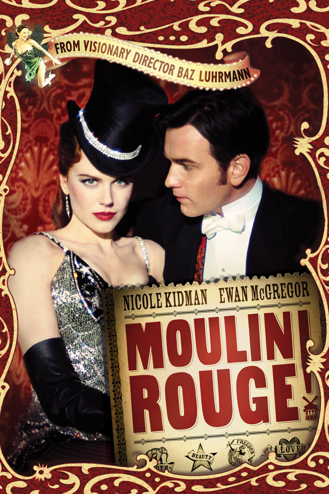

Moulin Rouge!
Moulin Rouge! is a 2001 jukebox musical romantic drama film directed, co-produced, and co-written by Baz Luhrmann. The film tells the story of a young English poet/writer, Christian (Ewan McGregor), who falls in love with the star of the Moulin Rouge, cabaret actress and courtesan Satine (Nicole Kidman).
It uses the musical setting of the Montmartre Quarter of Paris, France. The film is the third part of Luhrmann's "Red Curtain Trilogy," following Strictly Ballroom and Romeo + Juliet.